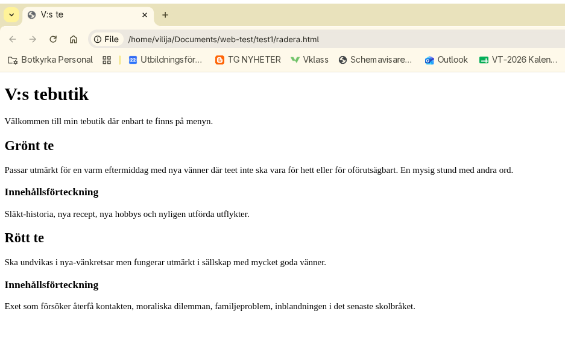

Lektion 1: Introduktion till HTML med fokus på indentering
1. Sätt raderna i rätt ordning och med korrekt indentering.
2. Sätt raderna i rätt ordning (och med korrekt indentering) så att outputet resulterar i en korrekt HTML-sida enligt bilden nedan.
